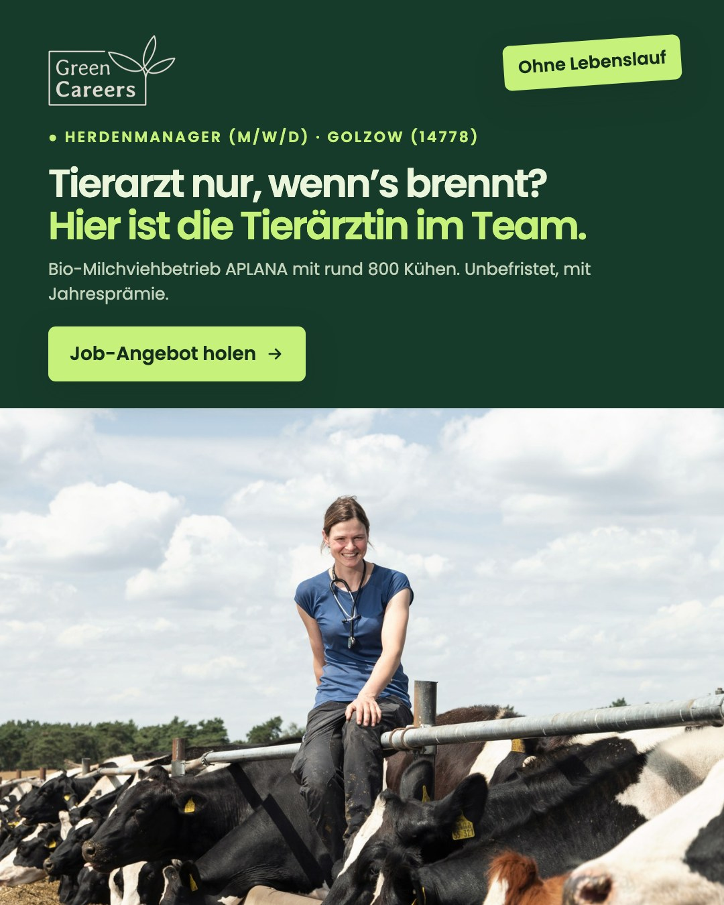
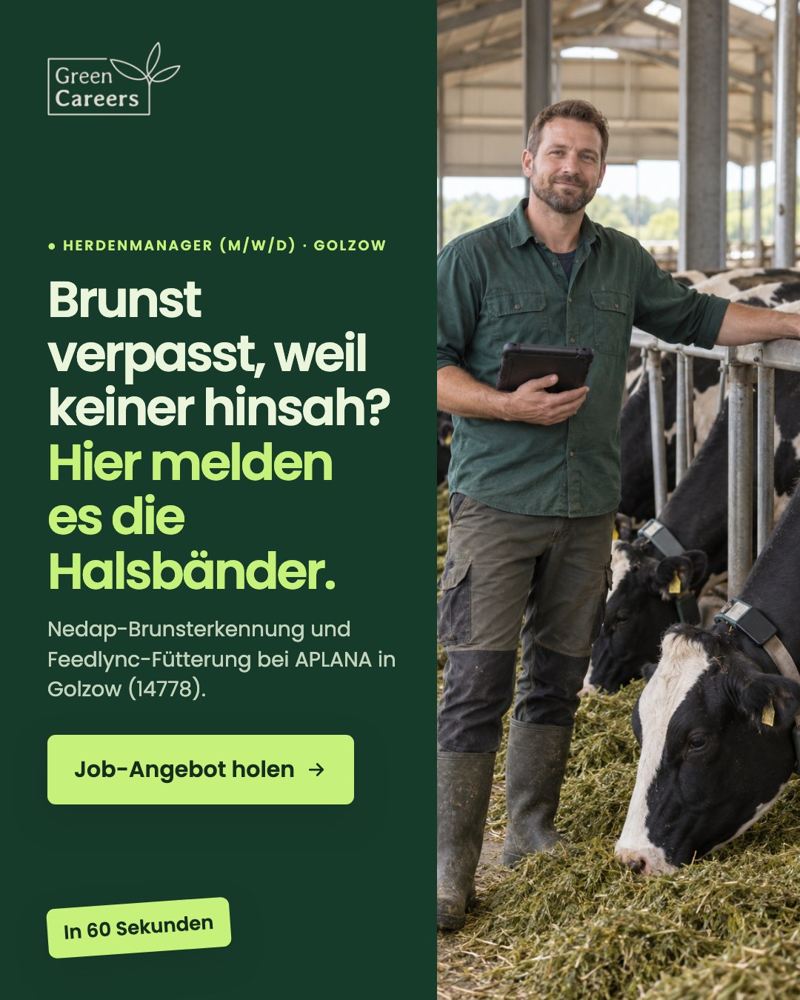

Kampagne live · Herdenmanager (m/w/d) · Agrar Planetal Golzow GmbH (APLANA)
Laufzeit 26.10.–02.11.2026 · Gesamtbudget 200 € · Umkreis 30 km um Golzow (14778) · Ziel: agrar-planetal-golzow.green-careers.de

Anzeige 1 · „Tierarzt nur, wenn’s brennt?“ (Prüfer Note 8)

Anzeige 2 · „Brunst verpasst, weil keiner hinsah?“ (Prüfer Note 8)